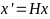

Figure
1: Mit Hugin generiertes
Panorama
Die neuen Bilder sollen miteinander kombiniert werden, um den Vergleich mit den Ergebnissen von LUNTE zu erleichtern. Außerdem soll geprüft werden, ob der gesamte Mikrocontroller wirklich gescannt wurde oder ob einige Bereiche ausgelassen wurden.
Hugin ist ein FOSS (Free Open Source Software) Stitching Programm zur Erstellung von Panoramas.
Die neu generierten Bilder werden in drei Schritten zusammengefügt:
Einlesen der Bilder: Die Bilder können per drag and drop in Hugin eingelesen werden.
Korrespondierende Punkte finden: Korrespondierende Punkte werden zuerst automatisch gefunden und können anschließend manuell bearbeitet werden. Punkte können gelöscht oder hinzugefügt werden. Es wird eine Projektdatei angelegt.
Stitchen: Die Bilder werden automatisiert zusammengefügt. Das resultierende Panorama wird im Angegebenen Pfad gespeichert.
Figure
1: Mit Hugin generiertes
Panorama
Bei der Verwendung von Hugin treten folgende Probleme auf:
Da die Scanbereiche jeweils nur einen Teil der Mikroskopaufnahme einnehmen gibt es erhebliche Überschneidungen. Da die SEL nur auf einem der Bilder eingezeichnet sind kommt es zum ‘Verschlucken’ der eingezeichneten SEL und das resultierend Panorama ist nicht zu gebrauchen.
Aus dem generierten Projektfile können keine relevanten Informationen zur Transformation der Bilder rekonstruiert werden. Dadurch ist es nicht möglich die SEL nach dem Erstellen des Panorama einzuzeichnen.
Dementsprechen ist Hugin für diese Anwendung nicht geeignet und muss als Methode verworfen werden.
Für das Zusammenfügen der Mikroskopbilder wird anstatt Hugin ein Python-Script verwendet. Hierzu wird ein Stitching-Algorithmus aus dem Internet (Quelle) eingesetzt.
Allerdings gibt es nach wie vor Probleme, da die SEL trotzdem noch "verschluckt" werden, ähnlich wie bei der Verwendung von Hugin. Deshalb ist es notwendig, die Herangehensweise anzupassen.
Python und OpenCV ermöglichen es mit Hilfe von Homographiematritzen Koordinatentransformationen zwischen zwei, sich überlappenden, Bildern durchzuführen. Um zwischen den einzelnen Bildern und dem erstellten Panorama Homographiematrizen zu berechnen, müssen folgende Schritte durchgeführt werden:
Zuerst müssen korrespondierende Punkte in beiden Bildern gefunden und die "guten" Korrespondenzen gespeichert werden.
Im nächsten Schritt wird OpenCV verwendet, um die Homographiematrix zu erstellen.
Anschließend werden die SEL-Koordinaten für das Panorama berechnet.
Es gilt:  , wobei H die Homographiematrix, x die Koordinaten im Originalbild (Einzelbild) und x’ die transformierten Koordinaten im Panorama sind.
Schließlich werden die SELs im Panorama eingezeichnet.

Figure
2: Mit Pyton über
Homographimatritzen erstelltes Panoram
Trotz der vielversprechenden Idee gibt es einige Probleme. Zum Beispiel sind die Scanbereiche an der Y-Achse gespiegelt und um 90° gegen den Uhrzeigersinn gedreht. Obwohl das Potential der Idee besteht, ist der Aufwand im Vergleich zum Nutzen zu hoch.
Bei der Manuellen Verarbeitung der von Python erzeugten Bildern müssen diese zunächst auf den Scanbereich zugeschnitten werden. Anschließend müssen die Scanbereiche manuell so ausgerichtet werden, dass sie nahtlos zusammengefügt werden können. Dies erfordert möglicherweise einige Anpassungen und eine sorgfältige Handhabung, um das beste Ergebnis zu erzielen.

Figure
3: manuell zusammengefügtes
Panorama